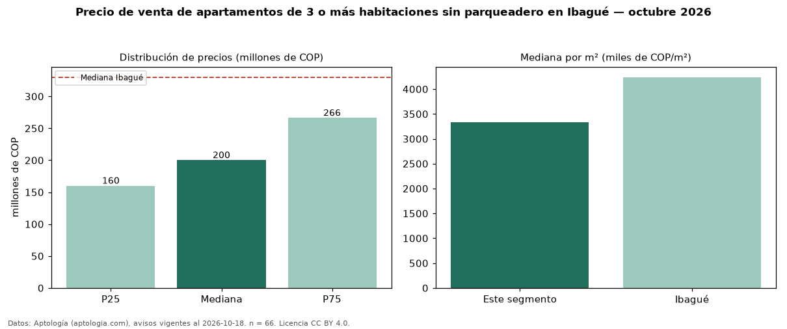

Precio de venta de apartamentos de 3 o más habitaciones sin parqueadero en Ibagué — octubre 2026
Con 66 avisos vigentes, el precio mediano de apartamentos de 3 o más habitaciones sin parqueadero en venta en Ibagué es COP 200 millones. Frente a la mediana de los apartamentos de 3 o más habitaciones en venta de Ibagué (COP 350 millones, n = 1.051), queda 43 % por debajo; este segmento reúne el 6 % de esos avisos. Por metro cuadrado, la mediana es COP 3,33 millones/m² (n = 57), 20 % por debajo de los apartamentos de 3 o más habitaciones en venta de Ibagué (COP 4,17 millones/m²). El área mediana anunciada es 59 m². La administración mediana declarada es COP 178.000 al mes (n = 48). El estrato más frecuente es 3 (64 % de los avisos con estrato). La mediana de todos los apartamentos en venta de Ibagué es COP 330 millones (−39 % de diferencia). La mitad central de los avisos va de COP 160 millones a COP 266 millones (razón 1,7), una dispersión moderada. Datos: Aptología (aptologia.com), CC BY 4.0 — https://www.aptologia.com/venta/ibague. Archivos: PDF, CSV con las cifras y gráfica PNG.

| Avisos únicos | 66 |
|---|---|
| Percentil 25 | COP 160.000.000 |
| Mediana | COP 200.000.000 |
| Percentil 75 | COP 266.250.000 |
| Mediana por m² | COP 3.333.333 |
Fuente: avisos vigentes de portales inmobiliarios recopilados por Aptología, deduplicados (mínimo 30 avisos únicos por celda). Precios pedidos, no cerrados. Fecha: 2026-10-18.